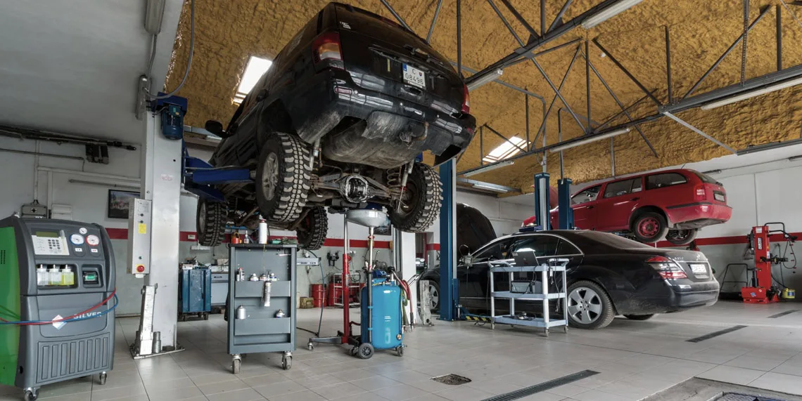
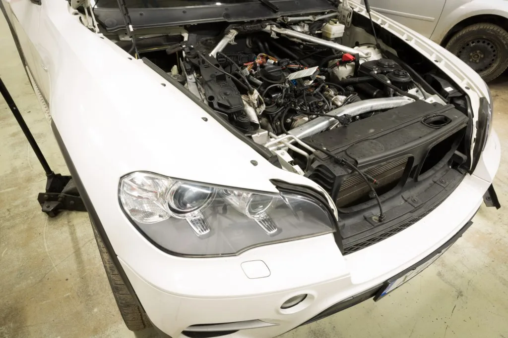
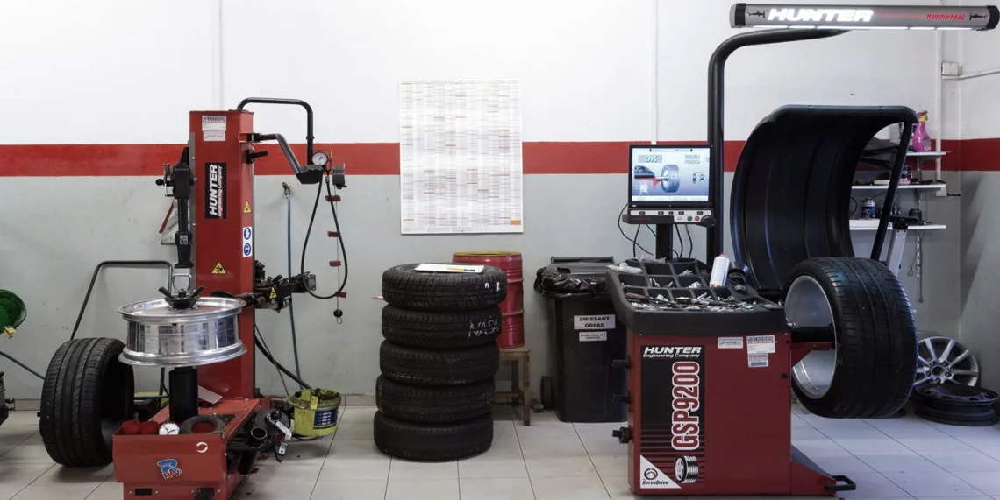
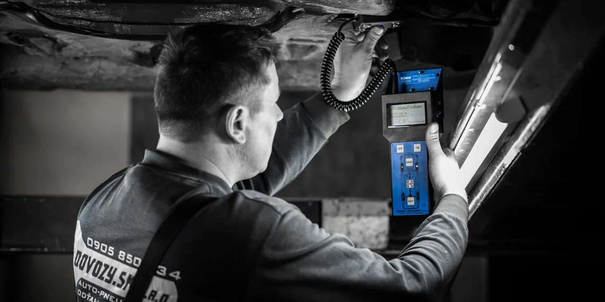
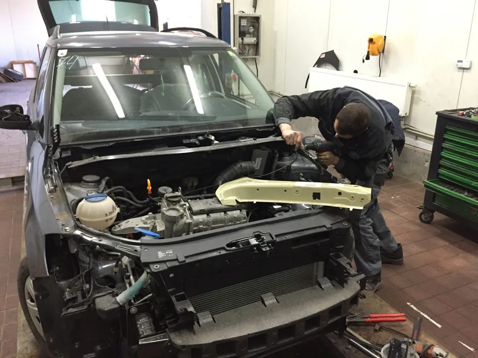
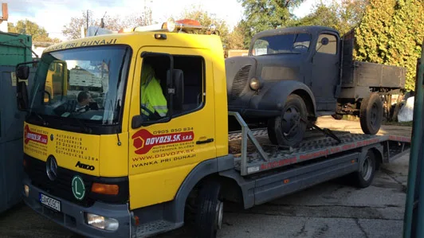
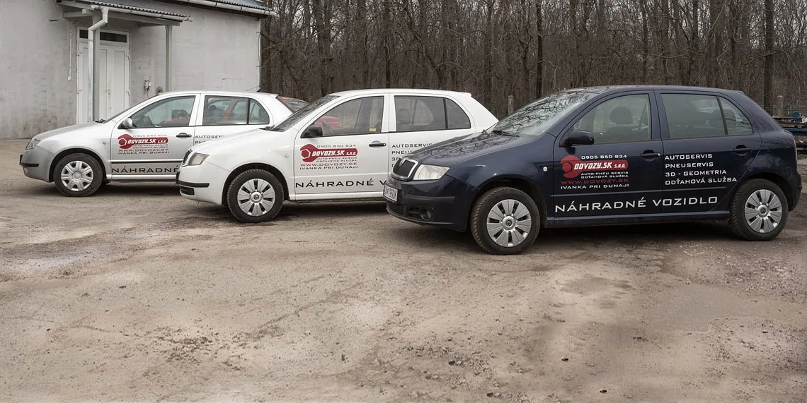

Ozvite sa
Zavolajte alebo vyplňte dopyt s typom vozidla a stručným opisom problému.

Auto-pneu servis • Ivanka pri Dunaji
Od pravidelnej údržby cez diagnostiku a pneuservis až po opravu po nehode. Jedna prevádzka, jeden tím a jasný kontakt.
Čo potrebujete vyriešiť?
Vyberte službu alebo rovno opíšte problém. Prijímací technik s vami dohodne vhodný postup.

01 / SERVISÚdržba, podvozok, brzdy, motor, prevodovka, rozvody aj spojka.

02 / KOLESÁPrezutie, vyváženie, defekty, uskladnenie a presná 3D geometria.

03 / DIAGNOSTIKAZnačkové aj univerzálne systémy, servis klimatizácií R134A a R1234YF.

04 / PO NEHODEOd odťahu a formalít s poisťovňou až po kompletnú opravu vozidla.

05 / NON-STOPPomoc pri poruche alebo nehode na Slovensku aj v rámci EÚ.
Vyzdvihnutie vozidla, náhradné autá, náhradné diely a dovoz áut zo zahraničia.
Prečo DOVOZY.SK
Firma sa prezentuje ako nezávislý servis s vlastným vybavením pre mechanické aj elektrikárske práce. Servisuje európske, ázijské aj americké značky, so špecializáciou na vozidlá koncernu Daimler.
Ako sa objednať
Ak neviete pomenovať konkrétnu službu, stačí popísať, čo sa s autom deje.
Zavolajte alebo vyplňte dopyt s typom vozidla a stručným opisom problému.
Prijímací technik s vami dohodne ďalší postup, termín a potrebné informácie.
Príďte do Ivanky pri Dunaji alebo sa informujte o možnosti pick-up servisu.

Keď auto musí zostať v servise
Pri dlhšej oprave sa môžete informovať o náhradnom vozidle. Ak nemáte čas prísť osobne, pick-up servis vie vozidlo bezpečne previezť do servisu a späť.
Dostupnosť, aktuálne ceny a podmienky sa potvrdzujú pri objednávke.
Opýtať sa na dostupnosťVybavenie uvádzané firmou
Konkrétne zariadenia, ktoré pôvodný web uvádza pri jednotlivých službách.
Najčastejšie otázky
Potrebujete termín alebo radu?
Zavolajte prijímaciemu technikovi alebo pripravte dopyt cez formulár.